<md-dialog aria-label="About"  ng-cloak>
  <form>
    <md-toolbar>
      <div class="md-toolbar-tools">
        <h2>About</h2>
        <span flex></span>
        <md-button class="md-icon-button" ng-click="closeDialog()">
          <md-icon aria-label="Close dialog">x</md-icon>
        </md-button>
      </div>
    </md-toolbar>
    <md-dialog-content>
      <div class="md-dialog-content">
        
        <h2>About</h2>
        <p>
          Whether its a meeting, a workout routine, or anything in-between, with tiktokk you can stay on time by planning and tracking your tasks.
        </p>
        <p>
          tiktokk is a simple web application where you can create, organise, and track tasks easily. Specify task topics and durations, arrange them in order, then as the timer runs you can see (and soon hear) the state of your schedule.
        </p>
        <p>
          We are a new platform that will continue to grow and imporve. We plan to allow users to create accounts and save multiple schedules soon. For now your schedule state will be saved in your browser. User feedback is always welcome 
          <a href="https://twitter.com/tiktokkapp" target="_blank">@tiktokkapp</a>
        </p>
      </div>
    </md-dialog-content>
  </form>
</md-dialog>